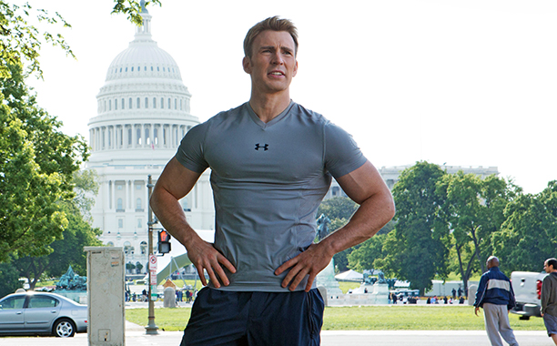
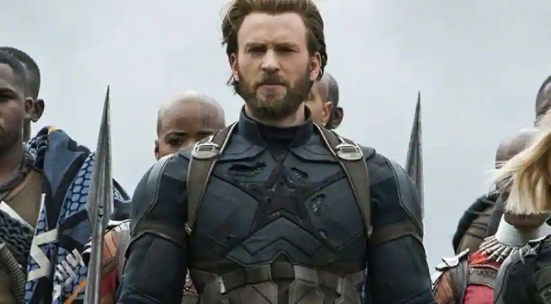

Christopher Robert Evans[1] (born June 13, 1981) is an American actor, best known for his role as Captain America in the Marvel Cinematic Universe (MCU) series of films. Evans began his career with roles in television series, such as in Opposite Sex in 2000. Following appearances in several teen films including 2001's Not Another Teen Movie, he gained attention for his portrayal of Marvel Comics character Human Torch in 2005's Fantastic Four, and its sequel Fantastic Four: Rise of the Silver Surfer (2007). Evans made further appearances in film adaptations of comic books and graphic novels: TMNT (2007), Scott Pilgrim vs. the World (2010), and Snowpiercer (2013).

He portrayed Captain America in several MCU films, namely Captain America: The First Avenger (2011), Captain America: The Winter Soldier (2014), and Captain America: Civil War (2016), and the ensemble films The Avengers (2012), Avengers: Age of Ultron (2015), Avengers: Infinity War (2018), and Avengers: Endgame (2019). His work on the Marvel series established him as one of the world's highest-paid actors.[2]
Aside from comic book roles, Evans starred in the drama Gifted (2017), the mystery film Knives Out (2019), and the television miniseries Defending Jacob (2020). He made his directorial debut in 2014 with the romantic drama Before We Go, which he also produced and starred in. Evans made his Broadway debut in the 2018 revival of Kenneth Lonergan's play Lobby Hero, which earned him a Drama League Award nomination.
Early life
Christopher Robert Evans was born on June 13, 1981,[3] in Boston, Massachusetts,[4] and grew up in the nearby town of Sudbury.[5] His mother, Lisa (née Capuano), is an artistic director at the Concord Youth Theater,[6][7] and his father, Bob, is a dentist.[8] Evans has Italian and Irish ancestry.[9][10] His parents divorced in 1999.[11]
Evans has two sisters, Carly and Shanna, and a brother, actor Scott Evans.[8] He and his siblings were raised Catholic.[10] Their uncle, Mike Capuano, represented Massachusetts's 8th congressional district.[12]
He enjoyed musical theater as a child, and attended acting camp. He played Randolph MacAfee in the musical Bye Bye Birdie.[13] He and siblings also performed in front of relatives during Christmases; recalling that being onstage "felt like home".[13] Before starting his senior year of high school, Evans spent the summer in New York City, and took classes at the Lee Strasberg Theatre and Film Institute.[14] Evans graduated early from Lincoln-Sudbury Regional High School.[5][14]
Career
1997–2004: Early roles
Evans's first credited appearance was in a short educational film titled Biodiversity: Wild About Life! in 1997.[15] In 1999, Evans was the model for "Tyler" in Hasbro's board game Mystery Date. The special edition of the game included an electronic phone, which Evans is shown speaking into on the game box.[16]
In September 2000, he moved to Los Angeles and lived in Oakwood Apartments in Toluca Lake, a complex where he met fellow young actors.[13] When he recalled of his experience during this time, he said, "You make a lot of strange connections with a lot of thirsty people, but you kind of are one of the thirsty people, too. It was a great time. It really was. It's like the L.A. welcoming committee".[13] In the same year, Evans made his screen debut in a television film, The Newcomers;[17] a family drama in which he plays a boy called Judd who falls in love with a girl (Kate Bosworth).[18] Evans also had a lead role in the television series Opposite Sex which lasted for eight episodes.[19] Lastly, Evans acted in an episode of The Fugitive named ''Guilt''.[20]
In 2001, he starred in Not Another Teen Movie,[21] a parody of teen movies, in which he plays a high school footballer.[22] The film garnered mainly negative reviews,[23][24] but grossed $38 million domestically and $28 million overseas for a worldwide $66 million.[25]
2005–2010: Breakthrough with comic book films
starred in London (2005), a romantic drama, in which he played a drug user with relationship problems.[31] London was negatively received by critics; Variety magazine described it as "noxious", and thought Evans' character was the worst,[32] and film critic Roger Ebert called the film a "dreck".[33]
For his first comic book role, he portrayed superhero Johnny Storm / Human Torch in Fantastic Four (2005), based on the Marvel Comic of the same name. Upon release, the film was a commercial success despite a divided reception.[34] In his mixed review, Joe Leydon of Variety praised the cast for their efforts and thought Evans gave a "charismatic breakout performance".[35] Two years later, he reprised the role of Johnny Storm / Human Torch in the sequel Fantastic Four: Rise of the Silver Surfer (2007).[36] Toronto Star's Rob Salem thought the film was a "significant improvement" from the first, and the critic from Chicago Reader thought the cast were "amusing enough" to carry the sequel.[37][38] In 2016, reflecting on his experience of the Fantastic Four films, Evans said they left him "a little uneasy – because the movies weren't exactly the way I'd envisioned them".[39]
2011–2017: Captain America and directorial debut
In 2010, Evans signed on for a multi-film deal with Marvel Studios, to portray Marvel Comics character Steve Rogers / Captain America.[62][63] Evans initially turned down the part, but he consulted with Robert Downey Jr., who encouraged him to take the role. At Marvel's persistence, Evans accepted, and he went to see a therapist afterwards.[13] He found the character fun to portray, and added, "I think Marvel is doing a lot of good things right now".[64] The first film to be released was Captain America: The First Avenger (2011). The story follows the protagonist who is transformed into the super-soldier Captain America and must stop the Red Skull from using the Tesseract as an energy-source for world domination. The film was a critical and commercial success, earning over $370 million worldwide box office.[65] In their positive review, The Sydney Morning Herald thought the film was a "fresh twist on 20th-century history", and praised Evans' "confident-but-subtle treatment" displayed in his role.[66]

A year later, he reprised the character in The Avengers, with a large ensemble cast that included Robert Downey Jr., Mark Ruffalo, Chris Hemsworth, Scarlett Johansson, and Jeremy Renner. The feature was another commercial success; it grossed $1.519 billion and became one of the highest-grossing films of all time.[67][68] Review aggregator Rotten Tomatoes gave the film an approval rating of 92% based on more than 350 reviews.[69] The Avengers received an Academy Award nomination for Best Visual Effects and a British Academy Film Award (BAFTA) nomination for Best Special Visual Effects.[70][71] For his last release of 2012, he played hitman Robert Pronge in the biographical film The Iceman, about the murderer Richard Kuklinski. Evans' role was originally intended for James Franco, but he dropped out before filming began.[72] In order to look the part, Evans wore a wig and grew a beard.[73] Writing for The Hollywood Reporter, David Rooney complimented Evans' versatile performance, which was unlike his Captain America persona.[74]
In 2014, Evans starred in Captain America: The Winter Soldier,[79] the sequel to Captain America: The First Avenger. In the film, Captain America joins forces with Black Widow and Falcon to uncover a conspiracy within the spy agency S.H.I.E.L.D. while facing an assassin known as the Winter Soldier. Principal photography began in August 2013;[80] Evans prepared by undertaking three months of strength training and learning all the fight sequences.[81][82] Similarly to the first film, it was well received and a commercial success, grossing $714 million worldwide.[83] Peter Howell of Toronto Star thought Evans was "impressive" for bringing the comic book character to life, despite the plot being "a little too complicated".[84] Evans has said The Winter Soldier was his favorite Marvel film because he started to understand his character, and enjoyed working with directors Anthony and Joe Russo.[85]